158 images
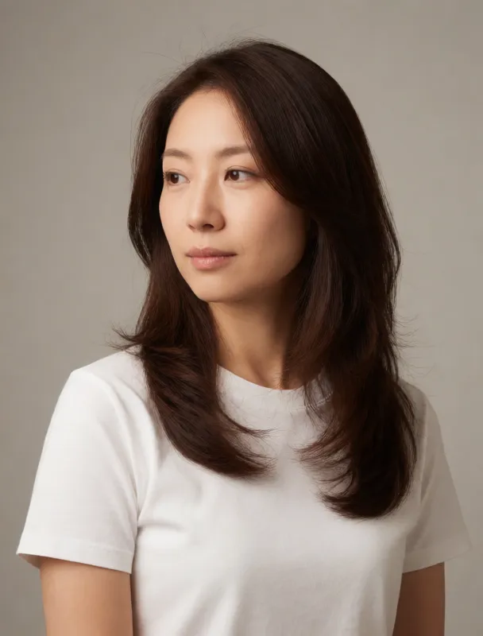
krea 2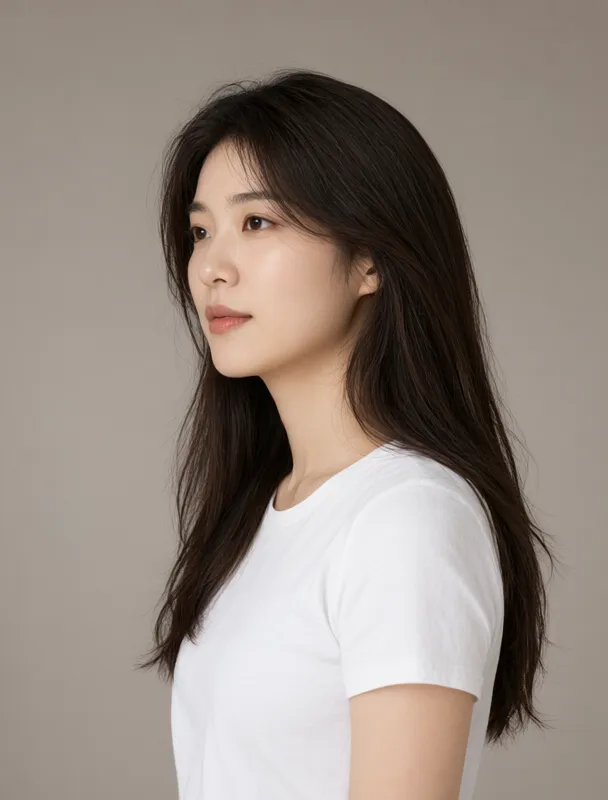
qwen image 2.1a full color studio portrait photograph in three-quarter view, framed from the shoulders up, lit by a soft diffused key light against a plain warm gray backdrop. the subject is a japanese woman of about twenty five. her hair is in long blowout layers. she wears a plain white crew-neck t-shirt. she is turned three quarters toward the left side of the frame and gazes off to the left side of the frame, away from the camera.
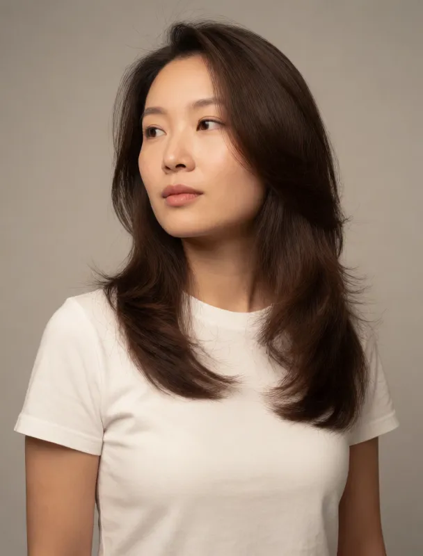
krea 2a full color studio portrait photograph in three-quarter view, framed from the shoulders up, lit by a soft diffused key light against a plain warm gray backdrop. the subject is a chinese woman of about twenty five. her hair is in long blowout layers. she wears a plain white crew-neck t-shirt. she is turned three quarters toward the left side of the frame and gazes off to the left side of the frame, away from the camera.
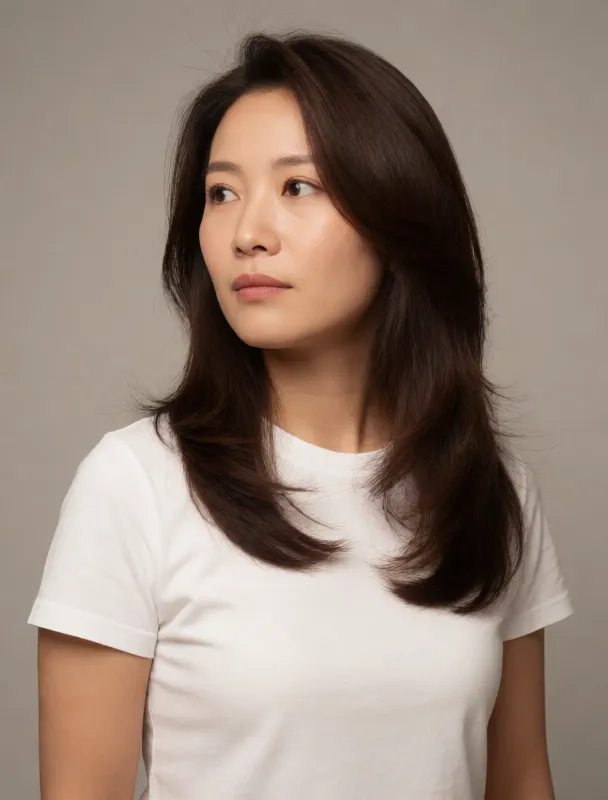
krea 2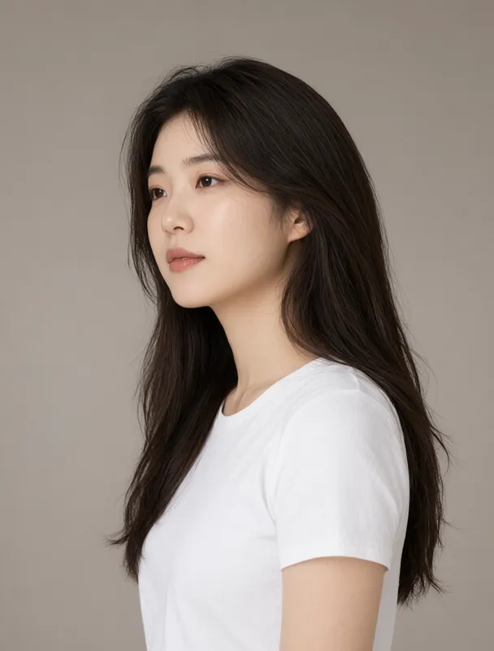
qwen image 2.1a full color studio portrait photograph in three-quarter view, framed from the shoulders up, lit by a soft diffused key light against a plain warm gray backdrop. the subject is a korean woman of about twenty five. her hair is in long blowout layers. she wears a plain white crew-neck t-shirt. she is turned three quarters toward the left side of the frame and gazes off to the left side of the frame, away from the camera.
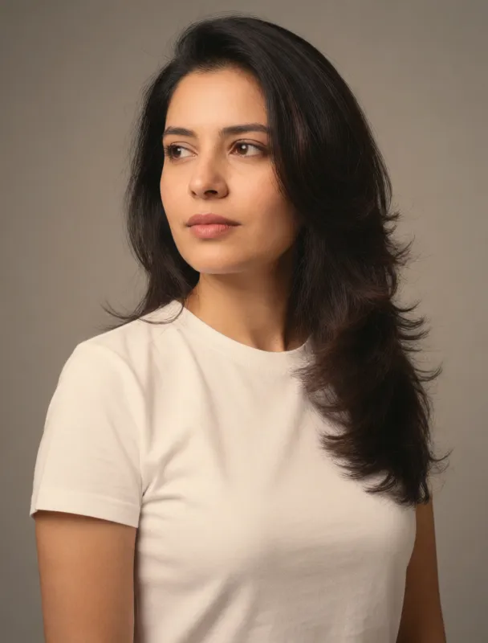
krea 2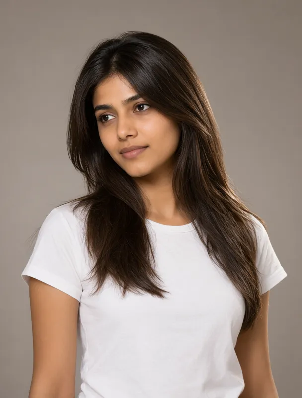
qwen image 2.1a full color studio portrait photograph in three-quarter view, framed from the shoulders up, lit by a soft diffused key light against a plain warm gray backdrop. the subject is an indian punjabi woman of about twenty five. her hair is in long blowout layers. she wears a plain white crew-neck t-shirt. she is turned three quarters toward the left side of the frame and gazes off to the left side of the frame, away from the camera.
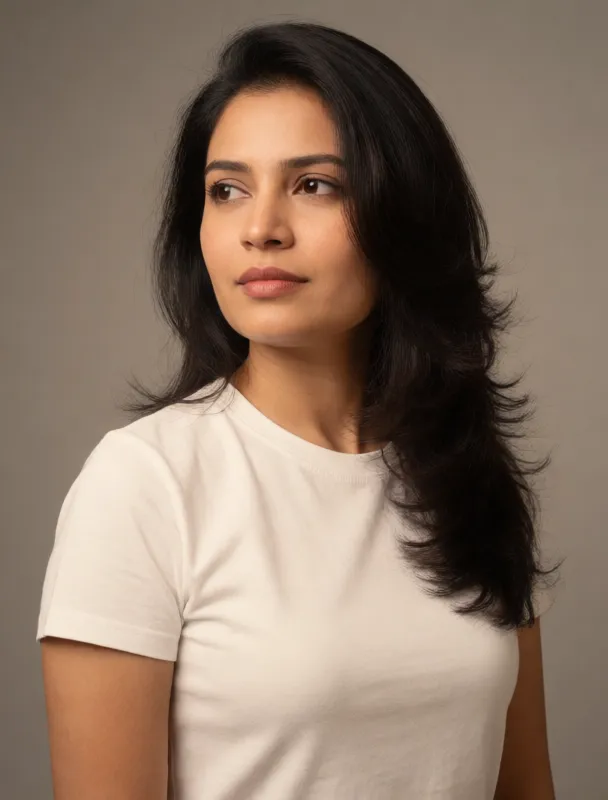
krea 2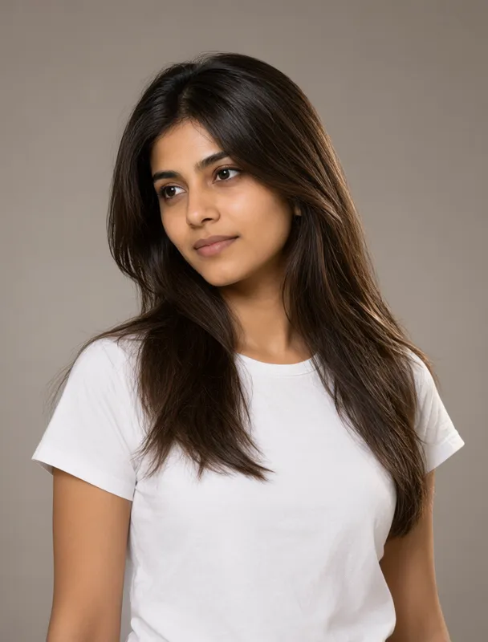
qwen image 2.1a full color studio portrait photograph in three-quarter view, framed from the shoulders up, lit by a soft diffused key light against a plain warm gray backdrop. the subject is a bengali woman of about twenty five. her hair is in long blowout layers. she wears a plain white crew-neck t-shirt. she is turned three quarters toward the left side of the frame and gazes off to the left side of the frame, away from the camera.
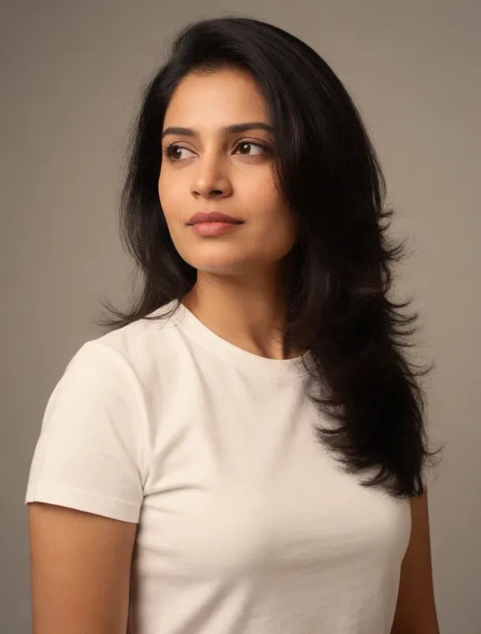
krea 2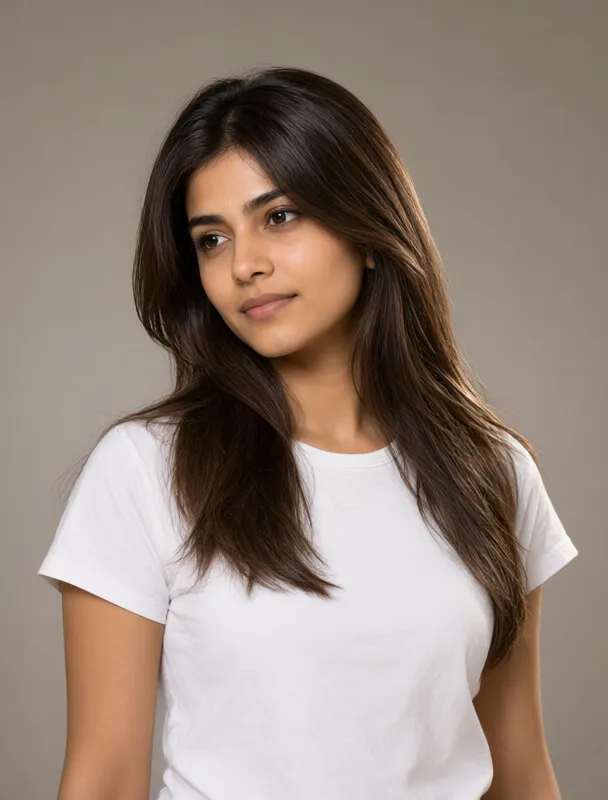
qwen image 2.1a full color studio portrait photograph in three-quarter view, framed from the shoulders up, lit by a soft diffused key light against a plain warm gray backdrop. the subject is a tamil woman of about twenty five. her hair is in long blowout layers. she wears a plain white crew-neck t-shirt. she is turned three quarters toward the left side of the frame and gazes off to the left side of the frame, away from the camera.
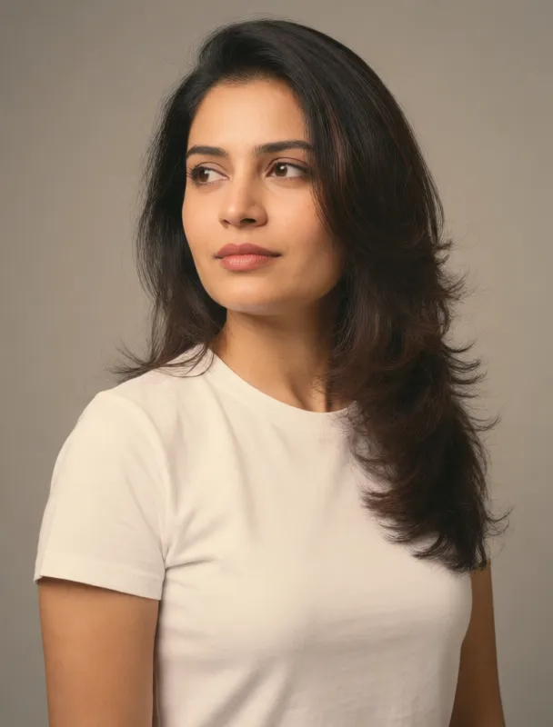
krea 2a full color studio portrait photograph in three-quarter view, framed from the shoulders up, lit by a soft diffused key light against a plain warm gray backdrop. the subject is a gujarati woman of about twenty five. her hair is in long blowout layers. she wears a plain white crew-neck t-shirt. she is turned three quarters toward the left side of the frame and gazes off to the left side of the frame, away from the camera.
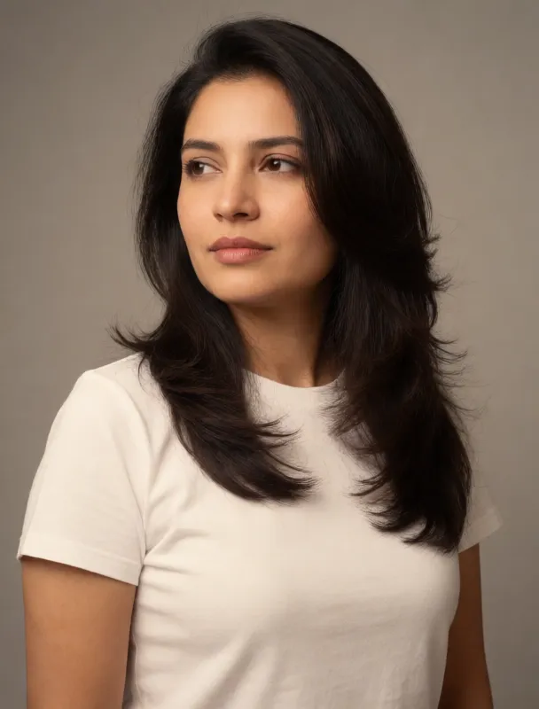
krea 2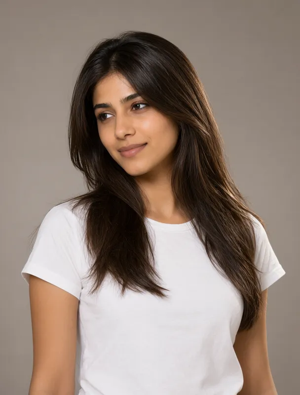
qwen image 2.1a full color studio portrait photograph in three-quarter view, framed from the shoulders up, lit by a soft diffused key light against a plain warm gray backdrop. the subject is a pakistani punjabi woman of about twenty five. her hair is in long blowout layers. she wears a plain white crew-neck t-shirt. she is turned three quarters toward the left side of the frame and gazes off to the left side of the frame, away from the camera.
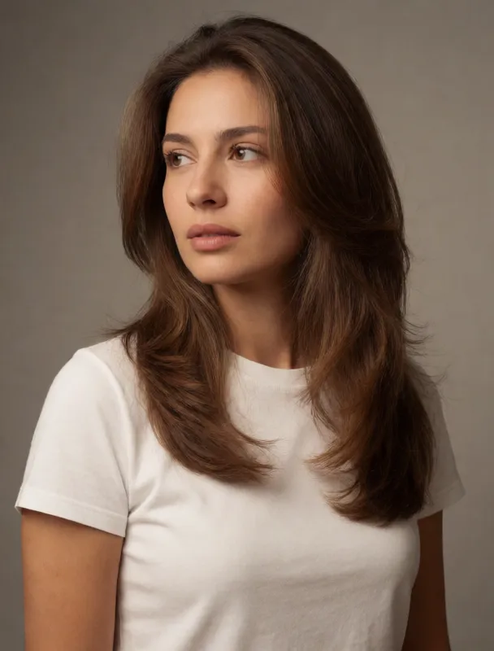
krea 2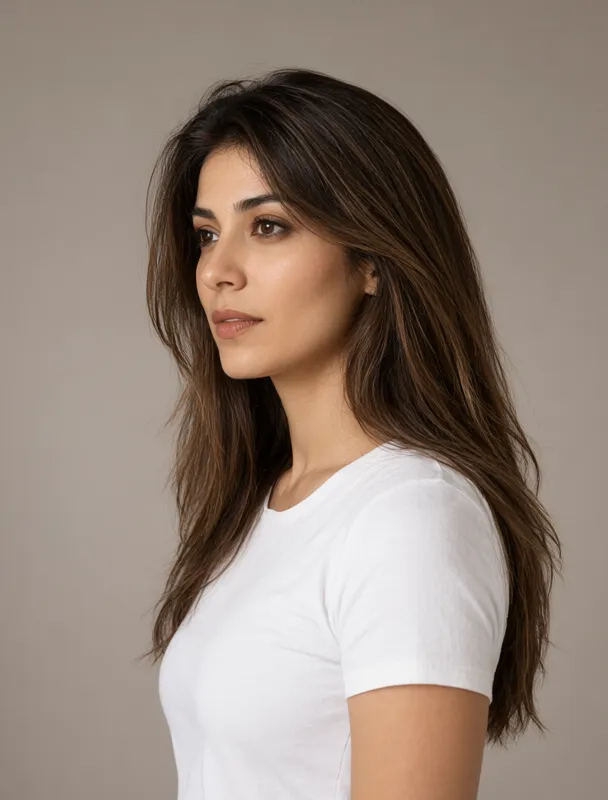
qwen image 2.1a full color studio portrait photograph in three-quarter view, framed from the shoulders up, lit by a soft diffused key light against a plain warm gray backdrop. the subject is a pashtun woman of about twenty five. her hair is in long blowout layers. she wears a plain white crew-neck t-shirt. she is turned three quarters toward the left side of the frame and gazes off to the left side of the frame, away from the camera.
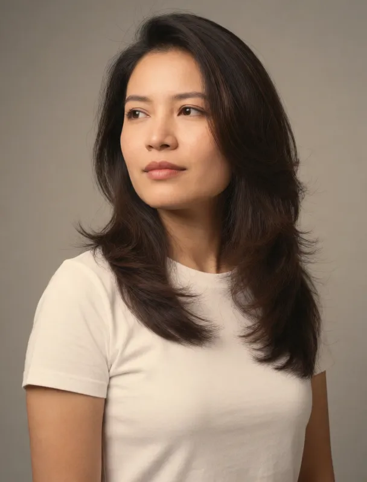
krea 2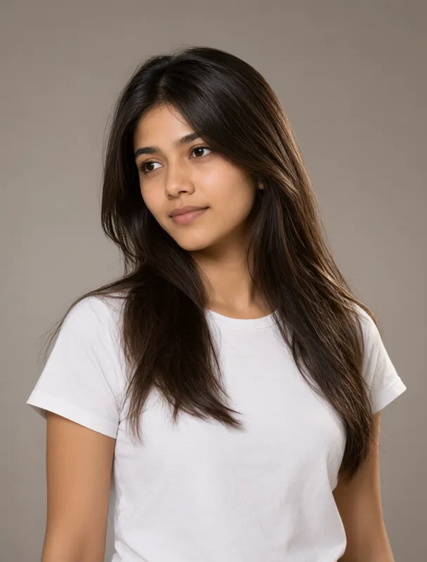
qwen image 2.1a full color studio portrait photograph in three-quarter view, framed from the shoulders up, lit by a soft diffused key light against a plain warm gray backdrop. the subject is a nepali newar woman of about twenty five. her hair is in long blowout layers. she wears a plain white crew-neck t-shirt. she is turned three quarters toward the left side of the frame and gazes off to the left side of the frame, away from the camera.
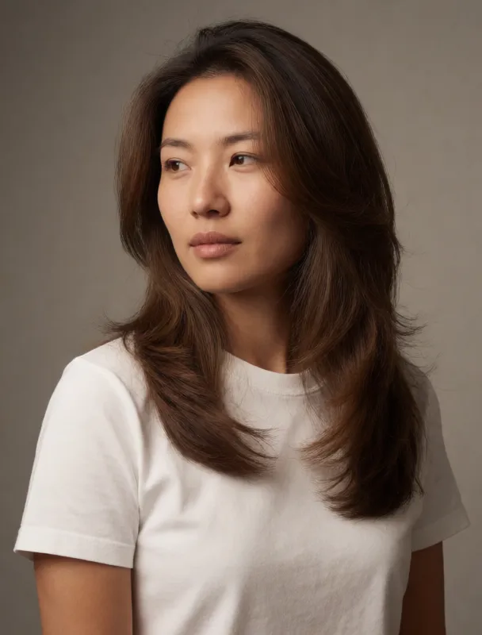
krea 2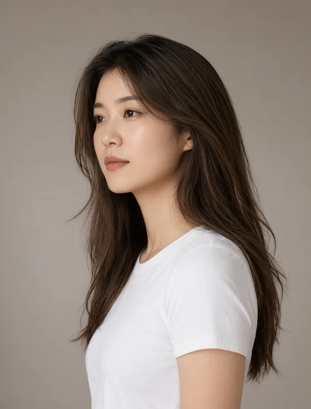
qwen image 2.1a full color studio portrait photograph in three-quarter view, framed from the shoulders up, lit by a soft diffused key light against a plain warm gray backdrop. the subject is a tibetan woman of about twenty five. her hair is in long blowout layers. she wears a plain white crew-neck t-shirt. she is turned three quarters toward the left side of the frame and gazes off to the left side of the frame, away from the camera.
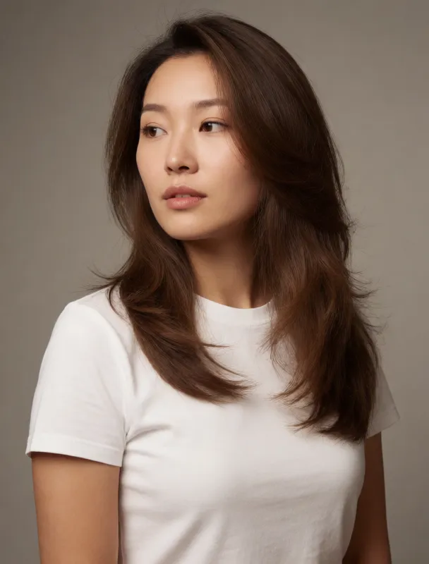
krea 2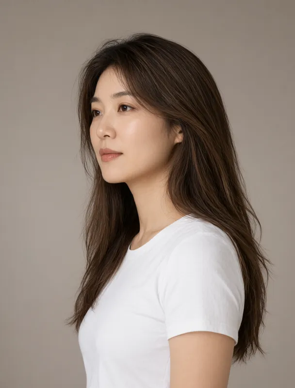
qwen image 2.1a full color studio portrait photograph in three-quarter view, framed from the shoulders up, lit by a soft diffused key light against a plain warm gray backdrop. the subject is a mongolian woman of about twenty five. her hair is in long blowout layers. she wears a plain white crew-neck t-shirt. she is turned three quarters toward the left side of the frame and gazes off to the left side of the frame, away from the camera.
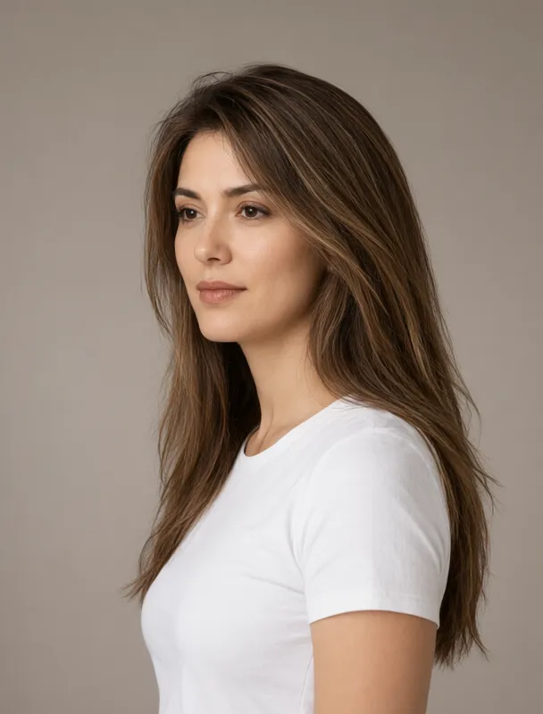
qwen image 2.1a full color studio portrait photograph in three-quarter view, framed from the shoulders up, lit by a soft diffused key light against a plain warm gray backdrop. the subject is a kazakh woman of about twenty five. her hair is in long blowout layers. she wears a plain white crew-neck t-shirt. she is turned three quarters toward the left side of the frame and gazes off to the left side of the frame, away from the camera.
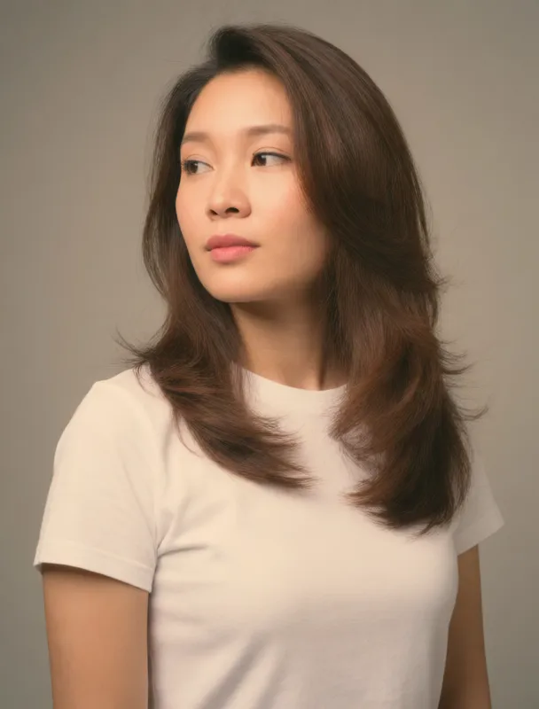
krea 2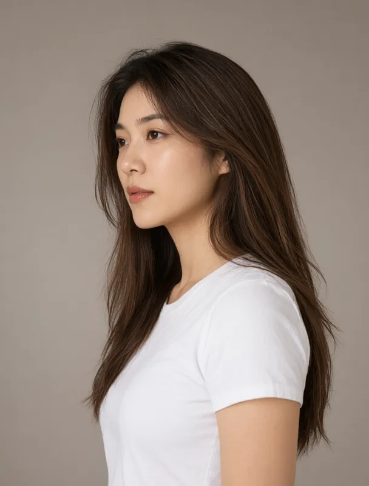
qwen image 2.1a full color studio portrait photograph in three-quarter view, framed from the shoulders up, lit by a soft diffused key light against a plain warm gray backdrop. the subject is a thai woman of about twenty five. her hair is in long blowout layers. she wears a plain white crew-neck t-shirt. she is turned three quarters toward the left side of the frame and gazes off to the left side of the frame, away from the camera.
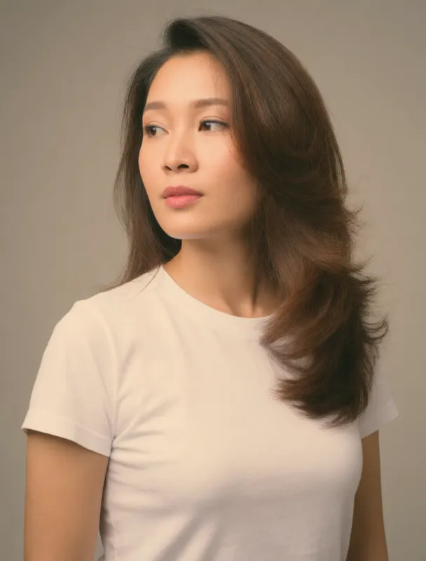
krea 2a full color studio portrait photograph in three-quarter view, framed from the shoulders up, lit by a soft diffused key light against a plain warm gray backdrop. the subject is a vietnamese woman of about twenty five. her hair is in long blowout layers. she wears a plain white crew-neck t-shirt. she is turned three quarters toward the left side of the frame and gazes off to the left side of the frame, away from the camera.
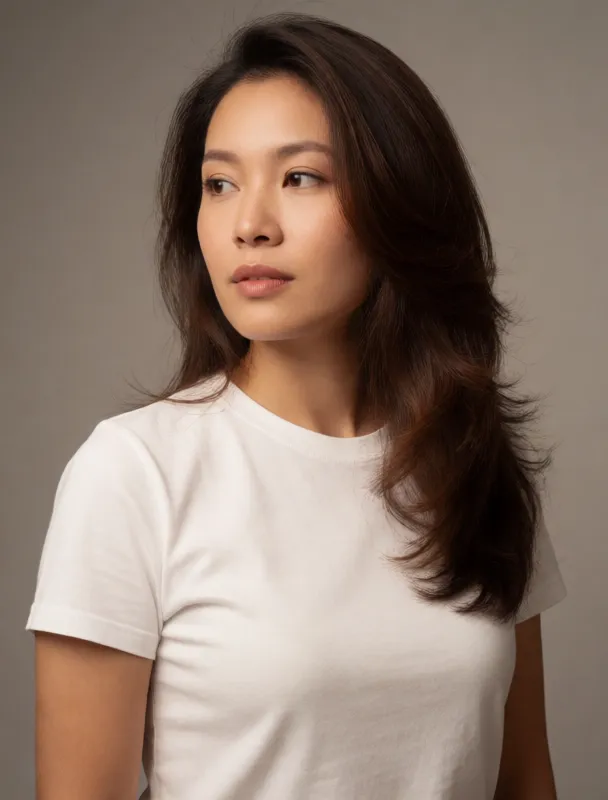
krea 2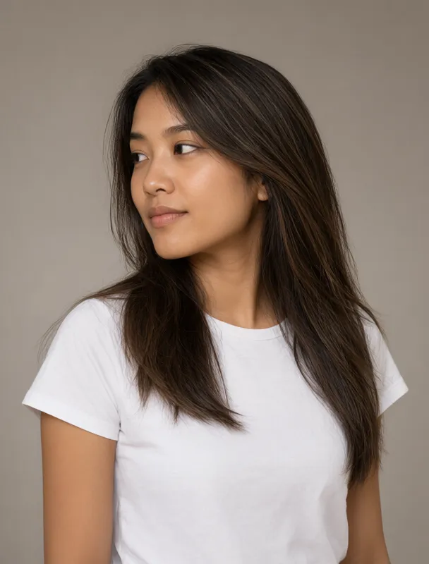
qwen image 2.1a full color studio portrait photograph in three-quarter view, framed from the shoulders up, lit by a soft diffused key light against a plain warm gray backdrop. the subject is a khmer cambodian woman of about twenty five. her hair is in long blowout layers. she wears a plain white crew-neck t-shirt. she is turned three quarters toward the left side of the frame and gazes off to the left side of the frame, away from the camera.
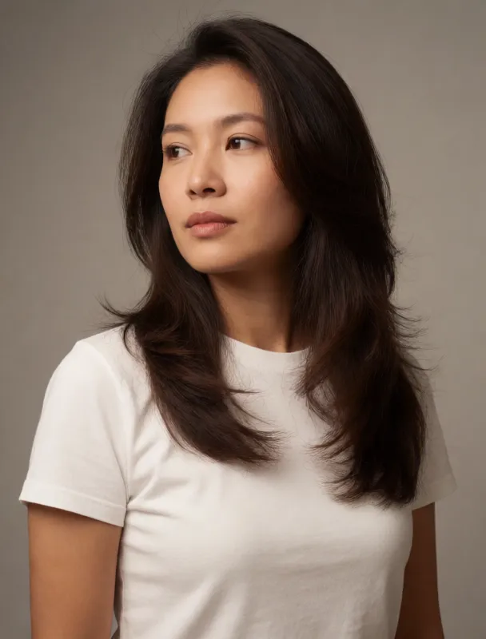
krea 2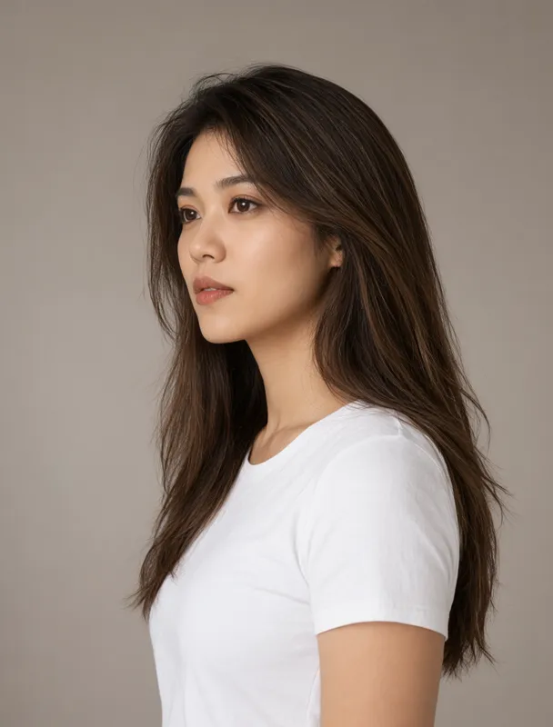
qwen image 2.1a full color studio portrait photograph in three-quarter view, framed from the shoulders up, lit by a soft diffused key light against a plain warm gray backdrop. the subject is a javanese indonesian woman of about twenty five. her hair is in long blowout layers. she wears a plain white crew-neck t-shirt. she is turned three quarters toward the left side of the frame and gazes off to the left side of the frame, away from the camera.
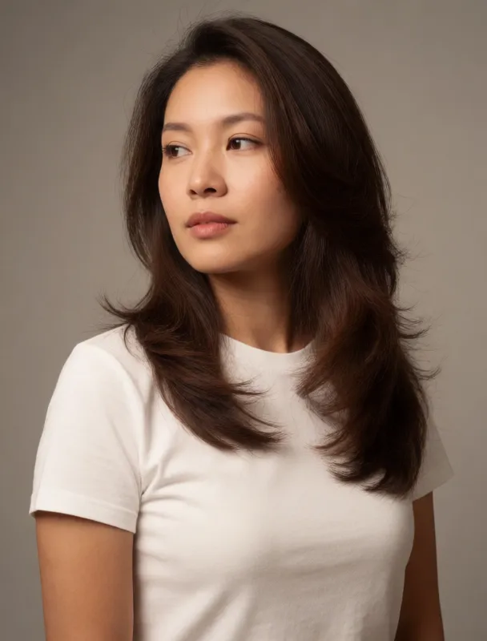
krea 2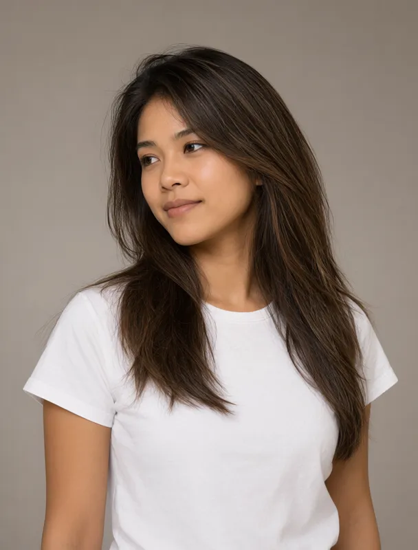
qwen image 2.1a full color studio portrait photograph in three-quarter view, framed from the shoulders up, lit by a soft diffused key light against a plain warm gray backdrop. the subject is a filipino visayan woman of about twenty five. her hair is in long blowout layers. she wears a plain white crew-neck t-shirt. she is turned three quarters toward the left side of the frame and gazes off to the left side of the frame, away from the camera.
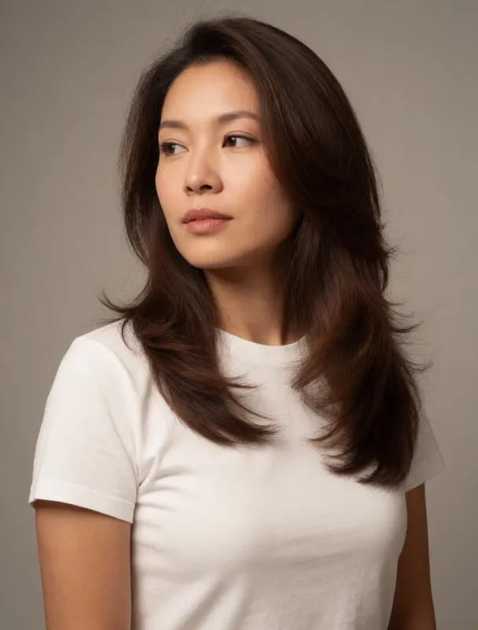
krea 2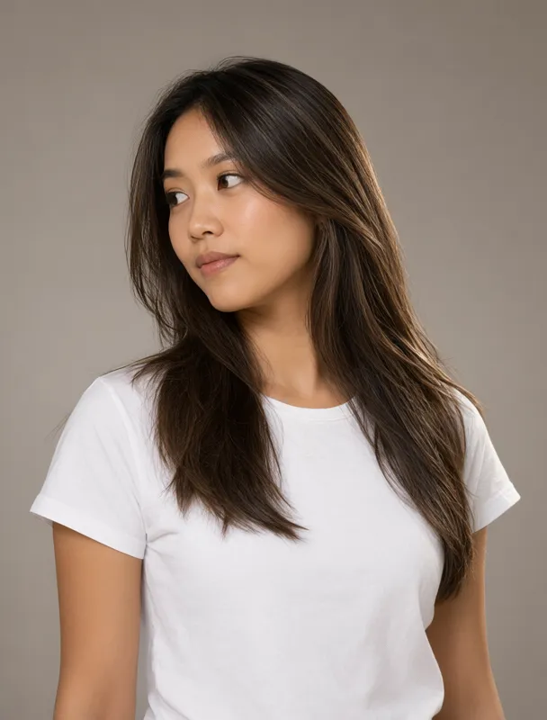
qwen image 2.1a full color studio portrait photograph in three-quarter view, framed from the shoulders up, lit by a soft diffused key light against a plain warm gray backdrop. the subject is a filipino tagalog woman of about twenty five. her hair is in long blowout layers. she wears a plain white crew-neck t-shirt. she is turned three quarters toward the left side of the frame and gazes off to the left side of the frame, away from the camera.
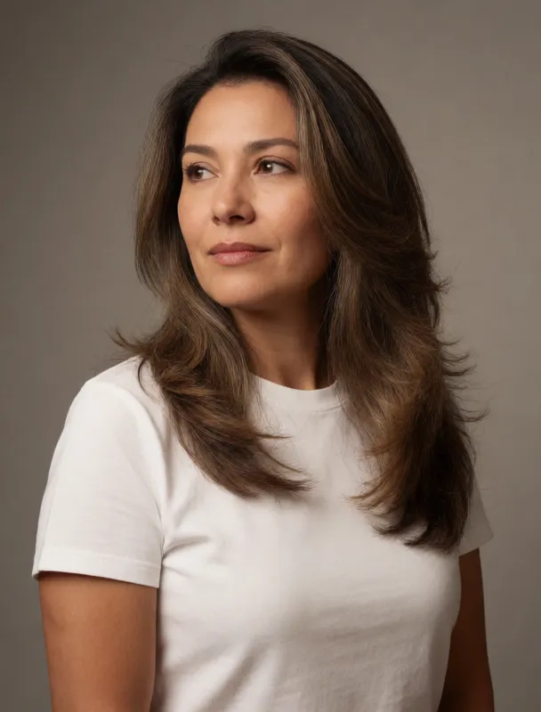
krea 2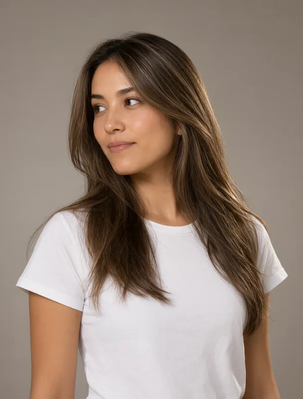
qwen image 2.1a full color studio portrait photograph in three-quarter view, framed from the shoulders up, lit by a soft diffused key light against a plain warm gray backdrop. the subject is a māori woman of about twenty five. her hair is in long blowout layers. she wears a plain white crew-neck t-shirt. she is turned three quarters toward the left side of the frame and gazes off to the left side of the frame, away from the camera.
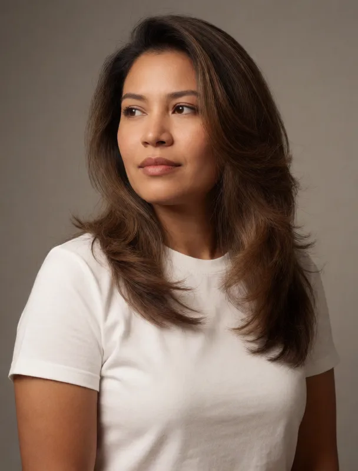
krea 2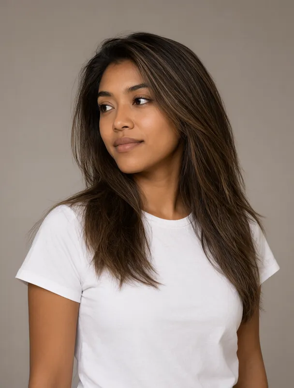
qwen image 2.1a full color studio portrait photograph in three-quarter view, framed from the shoulders up, lit by a soft diffused key light against a plain warm gray backdrop. the subject is a samoan woman of about twenty five. her hair is in long blowout layers. she wears a plain white crew-neck t-shirt. she is turned three quarters toward the left side of the frame and gazes off to the left side of the frame, away from the camera.
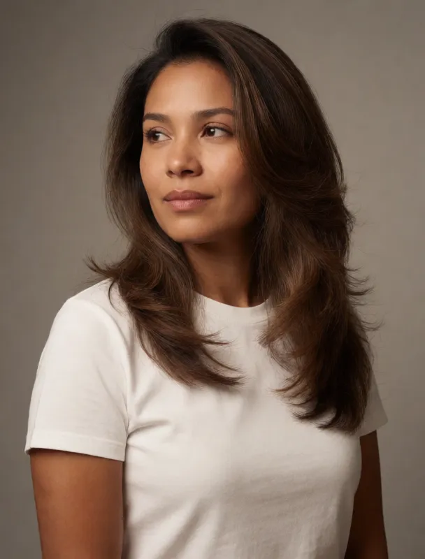
krea 2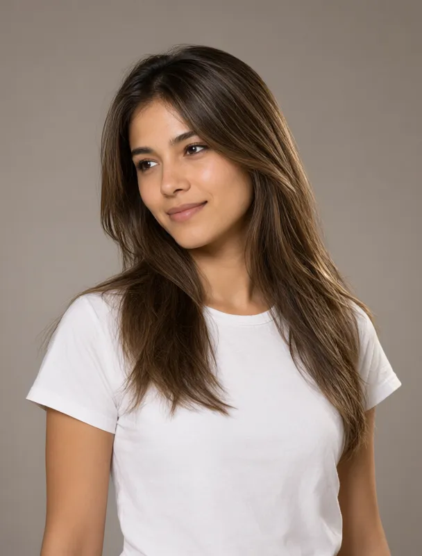
qwen image 2.1a full color studio portrait photograph in three-quarter view, framed from the shoulders up, lit by a soft diffused key light against a plain warm gray backdrop. the subject is a tongan woman of about twenty five. her hair is in long blowout layers. she wears a plain white crew-neck t-shirt. she is turned three quarters toward the left side of the frame and gazes off to the left side of the frame, away from the camera.
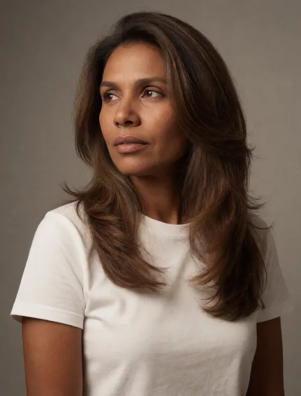
krea 2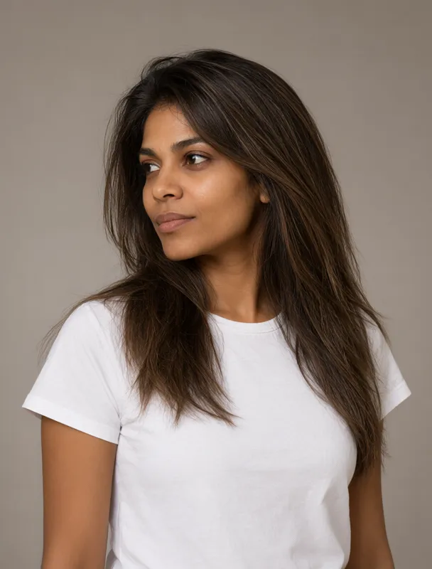
qwen image 2.1a full color studio portrait photograph in three-quarter view, framed from the shoulders up, lit by a soft diffused key light against a plain warm gray backdrop. the subject is an aboriginal australian woman of about twenty five. her hair is in long blowout layers. she wears a plain white crew-neck t-shirt. she is turned three quarters toward the left side of the frame and gazes off to the left side of the frame, away from the camera.
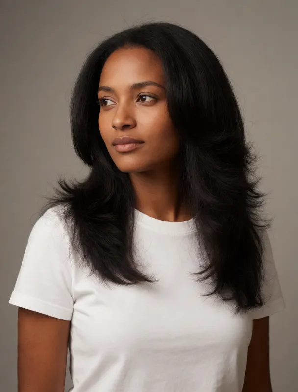
krea 2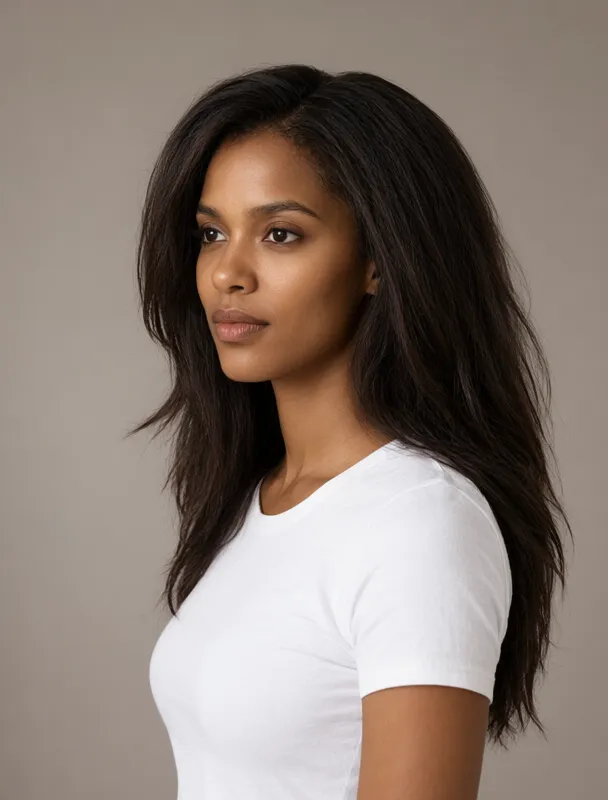
qwen image 2.1a full color studio portrait photograph in three-quarter view, framed from the shoulders up, lit by a soft diffused key light against a plain warm gray backdrop. the subject is an ethiopian amhara woman of about twenty five. her hair is in long blowout layers. she wears a plain white crew-neck t-shirt. she is turned three quarters toward the left side of the frame and gazes off to the left side of the frame, away from the camera.
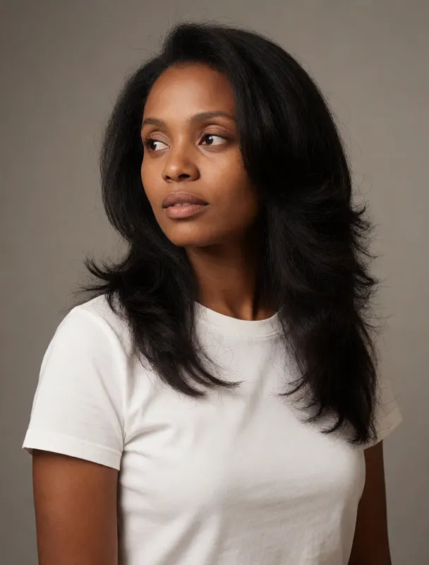
krea 2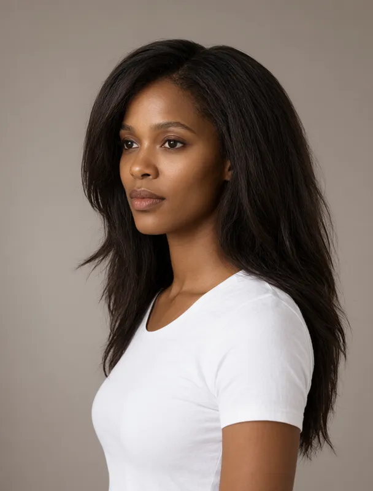
qwen image 2.1a full color studio portrait photograph in three-quarter view, framed from the shoulders up, lit by a soft diffused key light against a plain warm gray backdrop. the subject is an ethiopian oromo woman of about twenty five. her hair is in long blowout layers. she wears a plain white crew-neck t-shirt. she is turned three quarters toward the left side of the frame and gazes off to the left side of the frame, away from the camera.
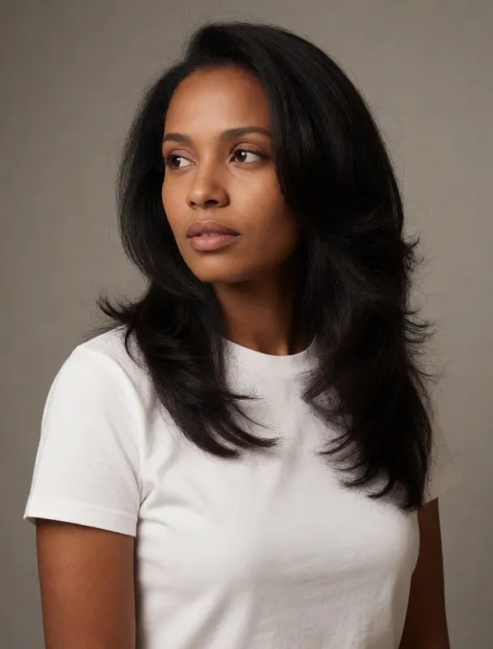
krea 2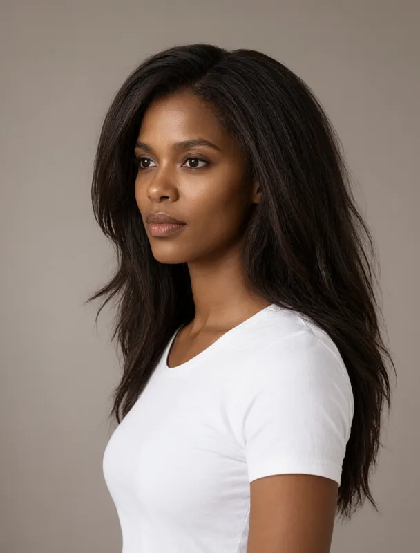
qwen image 2.1a full color studio portrait photograph in three-quarter view, framed from the shoulders up, lit by a soft diffused key light against a plain warm gray backdrop. the subject is an eritrean tigrinya woman of about twenty five. her hair is in long blowout layers. she wears a plain white crew-neck t-shirt. she is turned three quarters toward the left side of the frame and gazes off to the left side of the frame, away from the camera.
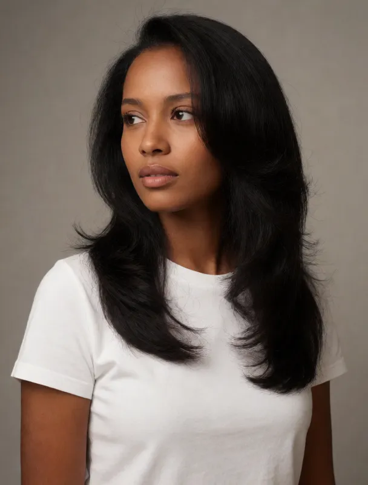
krea 2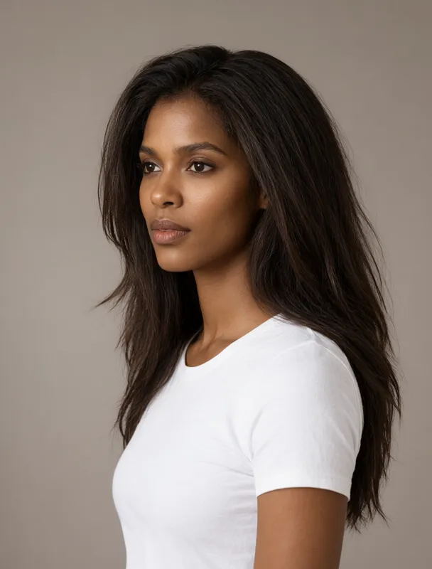
qwen image 2.1a full color studio portrait photograph in three-quarter view, framed from the shoulders up, lit by a soft diffused key light against a plain warm gray backdrop. the subject is a somali woman of about twenty five. her hair is in long blowout layers. she wears a plain white crew-neck t-shirt. she is turned three quarters toward the left side of the frame and gazes off to the left side of the frame, away from the camera.
a full color studio portrait photograph in three-quarter view, framed from the shoulders up, lit by a soft diffused key light against a plain warm gray backdrop. the subject is a kenyan kikuyu woman of about twenty five. her hair is in long blowout layers. she wears a plain white crew-neck t-shirt. she is turned three quarters toward the left side of the frame and gazes off to the left side of the frame, away from the camera.
a full color studio portrait photograph in three-quarter view, framed from the shoulders up, lit by a soft diffused key light against a plain warm gray backdrop. the subject is a rwandan woman of about twenty five. her hair is in long blowout layers. she wears a plain white crew-neck t-shirt. she is turned three quarters toward the left side of the frame and gazes off to the left side of the frame, away from the camera.
a full color studio portrait photograph in three-quarter view, framed from the shoulders up, lit by a soft diffused key light against a plain warm gray backdrop. the subject is a moroccan amazigh woman of about twenty five. her hair is in long blowout layers. she wears a plain white crew-neck t-shirt. she is turned three quarters toward the left side of the frame and gazes off to the left side of the frame, away from the camera.
a full color studio portrait photograph in three-quarter view, framed from the shoulders up, lit by a soft diffused key light against a plain warm gray backdrop. the subject is an algerian kabyle woman of about twenty five. her hair is in long blowout layers. she wears a plain white crew-neck t-shirt. she is turned three quarters toward the left side of the frame and gazes off to the left side of the frame, away from the camera.
a full color studio portrait photograph in three-quarter view, framed from the shoulders up, lit by a soft diffused key light against a plain warm gray backdrop. the subject is a tunisian woman of about twenty five. her hair is in long blowout layers. she wears a plain white crew-neck t-shirt. she is turned three quarters toward the left side of the frame and gazes off to the left side of the frame, away from the camera.
a full color studio portrait photograph in three-quarter view, framed from the shoulders up, lit by a soft diffused key light against a plain warm gray backdrop. the subject is an egyptian woman of about twenty five. her hair is in long blowout layers. she wears a plain white crew-neck t-shirt. she is turned three quarters toward the left side of the frame and gazes off to the left side of the frame, away from the camera.
a full color studio portrait photograph in three-quarter view, framed from the shoulders up, lit by a soft diffused key light against a plain warm gray backdrop. the subject is a nigerian yoruba woman of about twenty five. her hair is in long blowout layers. she wears a plain white crew-neck t-shirt. she is turned three quarters toward the left side of the frame and gazes off to the left side of the frame, away from the camera.
a full color studio portrait photograph in three-quarter view, framed from the shoulders up, lit by a soft diffused key light against a plain warm gray backdrop. the subject is a nigerian igbo woman of about twenty five. her hair is in long blowout layers. she wears a plain white crew-neck t-shirt. she is turned three quarters toward the left side of the frame and gazes off to the left side of the frame, away from the camera.
a full color studio portrait photograph in three-quarter view, framed from the shoulders up, lit by a soft diffused key light against a plain warm gray backdrop. the subject is a ghanaian akan woman of about twenty five. her hair is in long blowout layers. she wears a plain white crew-neck t-shirt. she is turned three quarters toward the left side of the frame and gazes off to the left side of the frame, away from the camera.
a full color studio portrait photograph in three-quarter view, framed from the shoulders up, lit by a soft diffused key light against a plain warm gray backdrop. the subject is a south african zulu woman of about twenty five. her hair is in long blowout layers. she wears a plain white crew-neck t-shirt. she is turned three quarters toward the left side of the frame and gazes off to the left side of the frame, away from the camera.
a full color studio portrait photograph in three-quarter view, framed from the shoulders up, lit by a soft diffused key light against a plain warm gray backdrop. the subject is a south african xhosa woman of about twenty five. her hair is in long blowout layers. she wears a plain white crew-neck t-shirt. she is turned three quarters toward the left side of the frame and gazes off to the left side of the frame, away from the camera.
a full color studio portrait photograph in three-quarter view, framed from the shoulders up, lit by a soft diffused key light against a plain warm gray backdrop. the subject is a congolese woman of about twenty five. her hair is in long blowout layers. she wears a plain white crew-neck t-shirt. she is turned three quarters toward the left side of the frame and gazes off to the left side of the frame, away from the camera.
a full color studio portrait photograph in three-quarter view, framed from the shoulders up, lit by a soft diffused key light against a plain warm gray backdrop. the subject is a haitian woman of about twenty five. her hair is in long blowout layers. she wears a plain white crew-neck t-shirt. she is turned three quarters toward the left side of the frame and gazes off to the left side of the frame, away from the camera.
a full color studio portrait photograph in three-quarter view, framed from the shoulders up, lit by a soft diffused key light against a plain warm gray backdrop. the subject is a dominican woman of about twenty five. her hair is in long blowout layers. she wears a plain white crew-neck t-shirt. she is turned three quarters toward the left side of the frame and gazes off to the left side of the frame, away from the camera.
a full color studio portrait photograph in three-quarter view, framed from the shoulders up, lit by a soft diffused key light against a plain warm gray backdrop. the subject is a puerto rican woman of about twenty five. her hair is in long blowout layers. she wears a plain white crew-neck t-shirt. she is turned three quarters toward the left side of the frame and gazes off to the left side of the frame, away from the camera.
a full color studio portrait photograph in three-quarter view, framed from the shoulders up, lit by a soft diffused key light against a plain warm gray backdrop. the subject is a mexican yucatec maya woman of about twenty five. her hair is in long blowout layers. she wears a plain white crew-neck t-shirt. she is turned three quarters toward the left side of the frame and gazes off to the left side of the frame, away from the camera.
a full color studio portrait photograph in three-quarter view, framed from the shoulders up, lit by a soft diffused key light against a plain warm gray backdrop. the subject is a mexican woman of spanish descent, about twenty five. her hair is in long blowout layers. she wears a plain white crew-neck t-shirt. she is turned three quarters toward the left side of the frame and gazes off to the left side of the frame, away from the camera.
a full color studio portrait photograph in three-quarter view, framed from the shoulders up, lit by a soft diffused key light against a plain warm gray backdrop. the subject is a canadian woman of about twenty five. her hair is in long blowout layers. she wears a plain white crew-neck t-shirt. she is turned three quarters toward the left side of the frame and gazes off to the left side of the frame, away from the camera.
a full color studio portrait photograph in three-quarter view, framed from the shoulders up, lit by a soft diffused key light against a plain warm gray backdrop. the subject is an afro-brazilian woman of about twenty five. her hair is in long blowout layers. she wears a plain white crew-neck t-shirt. she is turned three quarters toward the left side of the frame and gazes off to the left side of the frame, away from the camera.
a full color studio portrait photograph in three-quarter view, framed from the shoulders up, lit by a soft diffused key light against a plain warm gray backdrop. the subject is a brazilian woman of portuguese descent, about twenty five. her hair is in long blowout layers. she wears a plain white crew-neck t-shirt. she is turned three quarters toward the left side of the frame and gazes off to the left side of the frame, away from the camera.
a full color studio portrait photograph in three-quarter view, framed from the shoulders up, lit by a soft diffused key light against a plain warm gray backdrop. the subject is a colombian paisa woman of about twenty five. her hair is in long blowout layers. she wears a plain white crew-neck t-shirt. she is turned three quarters toward the left side of the frame and gazes off to the left side of the frame, away from the camera.
a full color studio portrait photograph in three-quarter view, framed from the shoulders up, lit by a soft diffused key light against a plain warm gray backdrop. the subject is a peruvian quechua woman of about twenty five. her hair is in long blowout layers. she wears a plain white crew-neck t-shirt. she is turned three quarters toward the left side of the frame and gazes off to the left side of the frame, away from the camera.
a full color studio portrait photograph in three-quarter view, framed from the shoulders up, lit by a soft diffused key light against a plain warm gray backdrop. the subject is a bolivian aymara woman of about twenty five. her hair is in long blowout layers. she wears a plain white crew-neck t-shirt. she is turned three quarters toward the left side of the frame and gazes off to the left side of the frame, away from the camera.
a full color studio portrait photograph in three-quarter view, framed from the shoulders up, lit by a soft diffused key light against a plain warm gray backdrop. the subject is an argentinian woman of italian descent, about twenty five. her hair is in long blowout layers. she wears a plain white crew-neck t-shirt. she is turned three quarters toward the left side of the frame and gazes off to the left side of the frame, away from the camera.
a full color studio portrait photograph in three-quarter view, framed from the shoulders up, lit by a soft diffused key light against a plain warm gray backdrop. the subject is a chilean woman of about twenty five. her hair is in long blowout layers. she wears a plain white crew-neck t-shirt. she is turned three quarters toward the left side of the frame and gazes off to the left side of the frame, away from the camera.
a full color studio portrait photograph in three-quarter view, framed from the shoulders up, lit by a soft diffused key light against a plain warm gray backdrop. the subject is a peruvian woman of japanese descent, about twenty five. her hair is in long blowout layers. she wears a plain white crew-neck t-shirt. she is turned three quarters toward the left side of the frame and gazes off to the left side of the frame, away from the camera.
a full color studio portrait photograph in three-quarter view, framed from the shoulders up, lit by a soft diffused key light against a plain warm gray backdrop. the subject is an irish woman of about twenty five. her hair is in long blowout layers. she wears a plain white crew-neck t-shirt. she is turned three quarters toward the left side of the frame and gazes off to the left side of the frame, away from the camera.
a full color studio portrait photograph in three-quarter view, framed from the shoulders up, lit by a soft diffused key light against a plain warm gray backdrop. the subject is a scottish highlander woman of about twenty five. her hair is in long blowout layers. she wears a plain white crew-neck t-shirt. she is turned three quarters toward the left side of the frame and gazes off to the left side of the frame, away from the camera.
a full color studio portrait photograph in three-quarter view, framed from the shoulders up, lit by a soft diffused key light against a plain warm gray backdrop. the subject is a welsh woman of about twenty five. her hair is in long blowout layers. she wears a plain white crew-neck t-shirt. she is turned three quarters toward the left side of the frame and gazes off to the left side of the frame, away from the camera.
a full color studio portrait photograph in three-quarter view, framed from the shoulders up, lit by a soft diffused key light against a plain warm gray backdrop. the subject is an english woman of about twenty five. her hair is in long blowout layers. she wears a plain white crew-neck t-shirt. she is turned three quarters toward the left side of the frame and gazes off to the left side of the frame, away from the camera.
a full color studio portrait photograph in three-quarter view, framed from the shoulders up, lit by a soft diffused key light against a plain warm gray backdrop. the subject is a norwegian woman of about twenty five. her hair is in long blowout layers. she wears a plain white crew-neck t-shirt. she is turned three quarters toward the left side of the frame and gazes off to the left side of the frame, away from the camera.
a full color studio portrait photograph in three-quarter view, framed from the shoulders up, lit by a soft diffused key light against a plain warm gray backdrop. the subject is a swedish woman of about twenty five. her hair is in long blowout layers. she wears a plain white crew-neck t-shirt. she is turned three quarters toward the left side of the frame and gazes off to the left side of the frame, away from the camera.
a full color studio portrait photograph in three-quarter view, framed from the shoulders up, lit by a soft diffused key light against a plain warm gray backdrop. the subject is a finnish woman of about twenty five. her hair is in long blowout layers. she wears a plain white crew-neck t-shirt. she is turned three quarters toward the left side of the frame and gazes off to the left side of the frame, away from the camera.
a full color studio portrait photograph in three-quarter view, framed from the shoulders up, lit by a soft diffused key light against a plain warm gray backdrop. the subject is an icelandic woman of about twenty five. her hair is in long blowout layers. she wears a plain white crew-neck t-shirt. she is turned three quarters toward the left side of the frame and gazes off to the left side of the frame, away from the camera.
a full color studio portrait photograph in three-quarter view, framed from the shoulders up, lit by a soft diffused key light against a plain warm gray backdrop. the subject is a french breton woman of about twenty five. her hair is in long blowout layers. she wears a plain white crew-neck t-shirt. she is turned three quarters toward the left side of the frame and gazes off to the left side of the frame, away from the camera.
a full color studio portrait photograph in three-quarter view, framed from the shoulders up, lit by a soft diffused key light against a plain warm gray backdrop. the subject is a german woman of about twenty five. her hair is in long blowout layers. she wears a plain white crew-neck t-shirt. she is turned three quarters toward the left side of the frame and gazes off to the left side of the frame, away from the camera.
a full color studio portrait photograph in three-quarter view, framed from the shoulders up, lit by a soft diffused key light against a plain warm gray backdrop. the subject is a dutch woman of about twenty five. her hair is in long blowout layers. she wears a plain white crew-neck t-shirt. she is turned three quarters toward the left side of the frame and gazes off to the left side of the frame, away from the camera.
a full color studio portrait photograph in three-quarter view, framed from the shoulders up, lit by a soft diffused key light against a plain warm gray backdrop. the subject is a spanish basque woman of about twenty five. her hair is in long blowout layers. she wears a plain white crew-neck t-shirt. she is turned three quarters toward the left side of the frame and gazes off to the left side of the frame, away from the camera.
a full color studio portrait photograph in three-quarter view, framed from the shoulders up, lit by a soft diffused key light against a plain warm gray backdrop. the subject is an italian sicilian woman of about twenty five. her hair is in long blowout layers. she wears a plain white crew-neck t-shirt. she is turned three quarters toward the left side of the frame and gazes off to the left side of the frame, away from the camera.
a full color studio portrait photograph in three-quarter view, framed from the shoulders up, lit by a soft diffused key light against a plain warm gray backdrop. the subject is a greek woman of about twenty five. her hair is in long blowout layers. she wears a plain white crew-neck t-shirt. she is turned three quarters toward the left side of the frame and gazes off to the left side of the frame, away from the camera.
a full color studio portrait photograph in three-quarter view, framed from the shoulders up, lit by a soft diffused key light against a plain warm gray backdrop. the subject is a portuguese woman of about twenty five. her hair is in long blowout layers. she wears a plain white crew-neck t-shirt. she is turned three quarters toward the left side of the frame and gazes off to the left side of the frame, away from the camera.
a full color studio portrait photograph in three-quarter view, framed from the shoulders up, lit by a soft diffused key light against a plain warm gray backdrop. the subject is a polish woman of about twenty five. her hair is in long blowout layers. she wears a plain white crew-neck t-shirt. she is turned three quarters toward the left side of the frame and gazes off to the left side of the frame, away from the camera.
a full color studio portrait photograph in three-quarter view, framed from the shoulders up, lit by a soft diffused key light against a plain warm gray backdrop. the subject is a ukrainian woman of about twenty five. her hair is in long blowout layers. she wears a plain white crew-neck t-shirt. she is turned three quarters toward the left side of the frame and gazes off to the left side of the frame, away from the camera.
a full color studio portrait photograph in three-quarter view, framed from the shoulders up, lit by a soft diffused key light against a plain warm gray backdrop. the subject is a czech woman of about twenty five. her hair is in long blowout layers. she wears a plain white crew-neck t-shirt. she is turned three quarters toward the left side of the frame and gazes off to the left side of the frame, away from the camera.
a full color studio portrait photograph in three-quarter view, framed from the shoulders up, lit by a soft diffused key light against a plain warm gray backdrop. the subject is a hungarian woman of about twenty five. her hair is in long blowout layers. she wears a plain white crew-neck t-shirt. she is turned three quarters toward the left side of the frame and gazes off to the left side of the frame, away from the camera.
a full color studio portrait photograph in three-quarter view, framed from the shoulders up, lit by a soft diffused key light against a plain warm gray backdrop. the subject is a romanian woman of about twenty five. her hair is in long blowout layers. she wears a plain white crew-neck t-shirt. she is turned three quarters toward the left side of the frame and gazes off to the left side of the frame, away from the camera.
a full color studio portrait photograph in three-quarter view, framed from the shoulders up, lit by a soft diffused key light against a plain warm gray backdrop. the subject is an ashkenazi jewish woman of about twenty five. her hair is in long blowout layers. she wears a plain white crew-neck t-shirt. she is turned three quarters toward the left side of the frame and gazes off to the left side of the frame, away from the camera.
a full color studio portrait photograph in three-quarter view, framed from the shoulders up, lit by a soft diffused key light against a plain warm gray backdrop. the subject is a romani woman of about twenty five. her hair is in long blowout layers. she wears a plain white crew-neck t-shirt. she is turned three quarters toward the left side of the frame and gazes off to the left side of the frame, away from the camera.
a full color studio portrait photograph in three-quarter view, framed from the shoulders up, lit by a soft diffused key light against a plain warm gray backdrop. the subject is a georgian woman of about twenty five. her hair is in long blowout layers. she wears a plain white crew-neck t-shirt. she is turned three quarters toward the left side of the frame and gazes off to the left side of the frame, away from the camera.
a full color studio portrait photograph in three-quarter view, framed from the shoulders up, lit by a soft diffused key light against a plain warm gray backdrop. the subject is an armenian woman of about twenty five. her hair is in long blowout layers. she wears a plain white crew-neck t-shirt. she is turned three quarters toward the left side of the frame and gazes off to the left side of the frame, away from the camera.
a full color studio portrait photograph in three-quarter view, framed from the shoulders up, lit by a soft diffused key light against a plain warm gray backdrop. the subject is a persian iranian woman of about twenty five. her hair is in long blowout layers. she wears a plain white crew-neck t-shirt. she is turned three quarters toward the left side of the frame and gazes off to the left side of the frame, away from the camera.
a full color studio portrait photograph in three-quarter view, framed from the shoulders up, lit by a soft diffused key light against a plain warm gray backdrop. the subject is a turkish woman of about twenty five. her hair is in long blowout layers. she wears a plain white crew-neck t-shirt. she is turned three quarters toward the left side of the frame and gazes off to the left side of the frame, away from the camera.